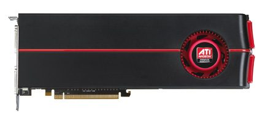

[ DUAL-GPU GRAPHICS CARDS // IDENTIFIED COMPONENT ]
ATI Radeon HD 5970 2 GB dual-GPU
Dual-Cypress / Evergreen, 2009. This entry describes one identifiable model or reference configuration; related products and OEM variants are distinguished below.

MODEL / VARIANT: VRAM is partitioned between GPUs, not shared. AIB boards may vary in clocks, cooler, length, BIOS and outputs; high power and case clearance are material.
Recorded specifications
| Cataloged product | ATI Radeon HD 5970 2 GB dual-GPU |
|---|---|
| Generation / core | Dual-Cypress / Evergreen, 2009 |
| Core & memory | Two Cypress GPUs with 1600 stream processors each; 2 GB GDDR5 total (1 GB per GPU); 725 MHz reference core; 294 W maximum board power. |
| Host interface & I/O | PCI Express 2.1 x16; one 8-pin plus one 6-pin power input on reference card; two DVI and Mini DisplayPort outputs. |
| Variant boundary | VRAM is partitioned between GPUs, not shared. AIB boards may vary in clocks, cooler, length, BIOS and outputs; high power and case clearance are material. |
| Archival identification | Record complete part number, PCB revision, BIOS/firmware, device/subsystem IDs, driver version, adapters, condition, and source-document edition. |
Compatibility, service & archival notes
CrossFire scaling and profiles are driver/application dependent; this dual-GPU design is not the single-GPU HD 5870.
Check both power plugs, long dual-slot cooler and fans. Document dual-BIOS position; retain VBIOS and legacy driver; verify both devices enumerate.
- Check signaling, slot keying, lane width, power pinout, board length, case clearance, airflow, and PSU requirements for the exact item.
- Use drivers for the device ID and target OS; preserve installer/firmware copies and record their source before updates.
- Do not power hardware with corrosion, cracks, damaged connectors, obstructed cooling, or suspected shorts; document condition before bench testing.
Manufacturer, model & standards sources
- AMD Radeon HD 5970 product/legacy support archiveModel-specific product or interface reference; compare with the physical label and exact board revision.
- Radeon HD 5970 model specificationsModel-specific product or interface reference; compare with the physical label and exact board revision.
- PCI Express specificationsModel-specific product or interface reference; compare with the physical label and exact board revision.
- Nasko The Retro — SHOCKING Performance From A Restored Graphics Card ATI Radeon HD5970Independent video review; treat as supplementary context, not primary manufacturer documentation.
Reference specifications do not supersede the board vendor manual and nameplate. Performance figures are vendor claims unless identified as measured results.